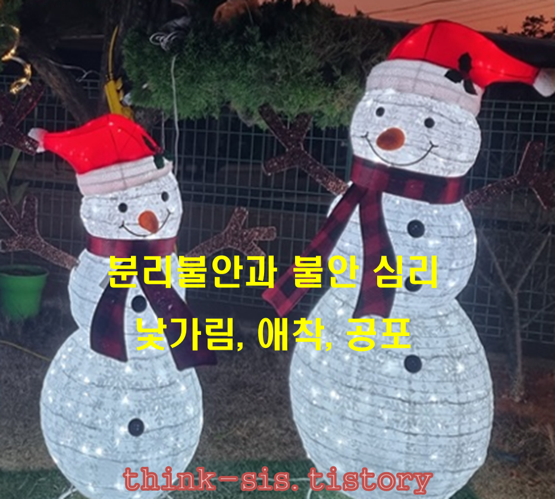

분리불안과 불안의 의미
분리불안(separation anxiety)이란 발달과정과 일상생활의 적응 정도에 따라 아이들에게 흔히 나타나는 증세이다. 최초 어머니상(primary mother-figure)의 상실감에 따른 공포증은 성장하면서 걱정, 근심, 두려움 등이 점차 완화되는데 강한 스트레스를 받거나 위기에 처했을 경우 무의식에 잠재된 불안을 뚜렷한 원인 없이 지나치게 표출하여 다양한 신체증상을 동반한다.
불안(anxiety, 不安)이란 걱정이 되어 마음이 편하지 않음, 또는 분위기 따위가 안정되지 않고 뒤숭숭함을 의미한다. 불안은 마음이 편하지 않음으로써 일상적으로 나타나는 감정이다.
발달과정과 일상생활의 적응 정도에 따라 분리불안과 불안으로 구분한다.

일반적 불안 심리가 분리불안으로
초등학교 2학년 남아를 매일 엄마가 출근하는 길에 아이를 학교 정문 앞에 내려 주면서 행복한 분리를 하였다. 아이는 엄마에게 전화를 했다. 아이는 교실 들어 가기 전, 쉬는 시간, 점심 후, 수업 마치고 학원 가기 전 등 수시로 전화를 하면서 일상생활을 밝혔다. 그런데 코로나로 비대면과 대면수업 간의 혼란이 나타났다. 이를 부모가 이해하고 있지만 아이는 등교하기 싫다고 떼를 쓰거나 가끔 울음을 나타냈다. 결국 아이는 매일 출근하는 엄마와 분리하기 어려워하면서 불안감을 나타냈다. 마침내 신체적 아픔으로 나타나고 잠도 설치면서 병원에 다니게 되었다. 그렇지만 아이는 지속적으로 또래와 어울리지 못하고 울음 등으로 등교거부를 하였다. 이러한 비정상적 분리불안이 지나치게 증가하였다.
전반적인 분리불안에 대한 점검은 다음과 같다.
① 특정 시기에 불안을 보이는 아이 대부분이 정상으로 성장하게 된다.
성인 불안장애는 의미있는 정신병리가 없었지만 아동-성인 간의 비연속성이다.
② 소아불안장애 대부분은 병적 불안이기보다는 정상불안의 과장된 표현인 경우가 많다.
③ 초등아동기 불안장애의 정신기제가 성인과 다르다는 이론적 근거가 있다.
④ 초등아동기 불안장애는 세부 진단명 간의 구분이 명확하지 않는 경우가 많다.
분리불안의 특이성은 ICD-10(WHO, 1992)에 반영되어 '소아에 국한된 감정장애'라는 독립된 범주로 있다. 이에 반해 분리불안과 선택적 함구증은 DSM-5(APA, 2013)에서는 연령에 관계없이 불안장애 범주에 흡수 통합되었다. 다시 말해, 분리불안이나 선택적 함구의 문제는 더 이상 아동 청소년기의 특정 질환이 아니다(출처: gettyimagesbank).
성장과 발달 과정에서 일반적으로 보이는 불안 심리를 살펴보면 다음과 같다.
1) 6-8개월
아이는 부모의 얼굴을 알아보고 웃음 짓는 영아기이다. 주 양육자 외 낯선 사람에게는 불안을 느끼는 행동으로 낯가림을 한다.
낯가림(stranger anxiety)이란 아이가 자신에게 친숙한 애착대상 이외의 대상에 대해 나타내는 불안 또는 공포반응이다(백과사전).
낯가림은 영아가 중요한 사람들과의 애착을 형성하고 그 외의 다른 사람을 거부하게 된다는 행동으로써 인지능력의 발달된다는 신호이다.
2) 2-3세
아이는 주변에서 어떤 새로운 자극이나 환경에 대한 탐색이 많아지는 시기이다.
이때의 호기심은 기질 성향에 따라 탐색하는 모습이 다르게 나타난다.
아이는 부모와의 애착 유형에 따라 자기조절력이 달라진다.
즉, 장난감을 갖고 놀거나 탐색 활동을 하는 도중에 부모가 눈 앞에서 사라지면 불안을 느낀다.
3) 4-6세
아이는 주변에 사람이 없고 혼자 남겨지는 것에 대한 불안을 느낀다.
특히 밤에 되면 음양의 차이에 따른 것과 수면을 해야 하는 시점에서 밤의 어두움에 대한 불안이 발생한다.
아이는 눈을 감으면 주변에 있는 자신의 장난감, 냉장고 속의 아이스크림, 부모가 직접 볼 수 없게 된다는 마음에 모두 사라질 것이라는 두려움과 공포까지 느끼게 된다.
또한 동화책이나 텔레비전 등에서 보았던 공룡, 뱀 등 특정 동물에 대한 것과 귀신이나 도깨비 등 상상과 공상으로 불안감을 주로 보인다.
4) 학령기 초기(초등학교 저학년)
아이는 부모에 대한 인지를 하고 가족보다는 또래와 사회적 관계를 더 선호하는 시기이다.
이 시기는 예기치 못하는 자연의 태풍이나 지진과 같은 재해에 대한 두려움이 증가될 정도로 인지가 발달한다. 또한 특정 물건(칼, 바늘, 날카로운 것)이나 높이에 대한 눈 앞에 보이는 공포를 민감하게 느낀다.
특히 이 시기에 학교에서 또래 및 친구관계에서 나타나는 객관적인 서열화되는 신체적, 인지적 등위(공부, 운동, 키와 몸무게 등)에 심리적 불안감이 발생한다.
5) 학령기 후기(초등학교 고학년)
아이는 인지적, 사회적 발달과 더불어 정서적으로 더욱 세분화 된다.
자기 주변의 사람이나 동물(개 고양이 등)의 죽음에 대한 인식이 확장되어 간다.
이 시기에 직접적 또는 간접적으로 보이는 물체와 보이지 않는 바이러스 등을 인식한다.
아이는 구체적이면서 논리적으로 죽음에 대한 공포와 불안을 더욱 내재화시켜 갈 수 있다.
아이는 학교나 학원 등에서 미성숙한 감정을 말과 행동으로 거칠게 나타내기도 한다.